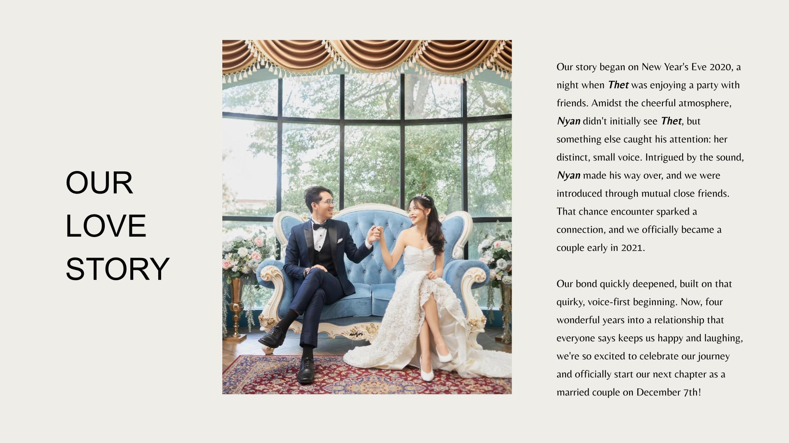
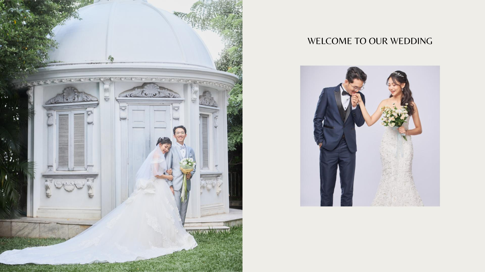
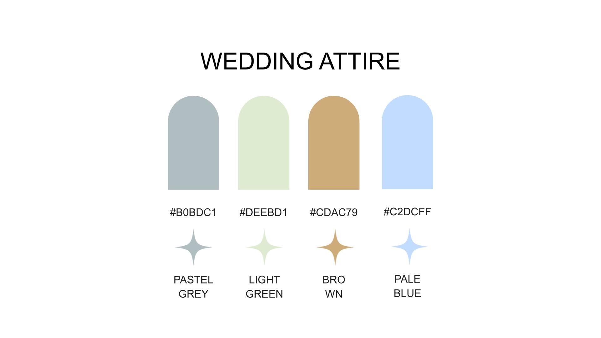
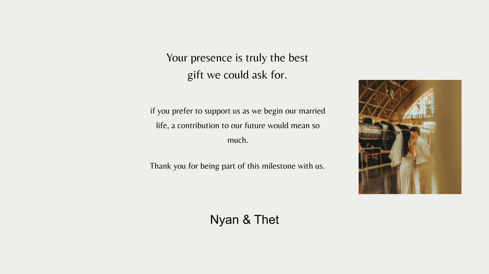
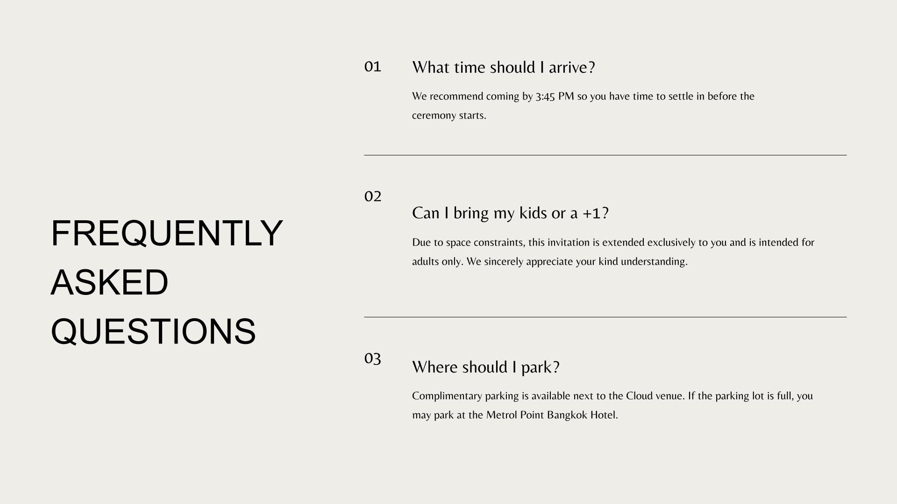
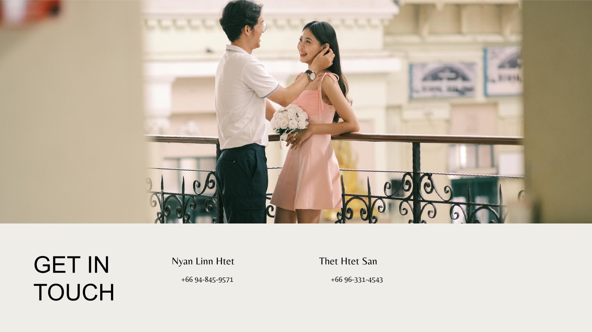

"Two souls, one journey, endless love."

"This day marks the start of forever."

"Together is our favorite place to be."

"Love is not about how many days, but how deeply every moment is shared."

"Every picture tells our love story."

"A day to remember, a love to cherish forever."

"Dreams do come true when we are together."

"With you, every chapter is magical."
💍 We can’t wait to celebrate with you 💍